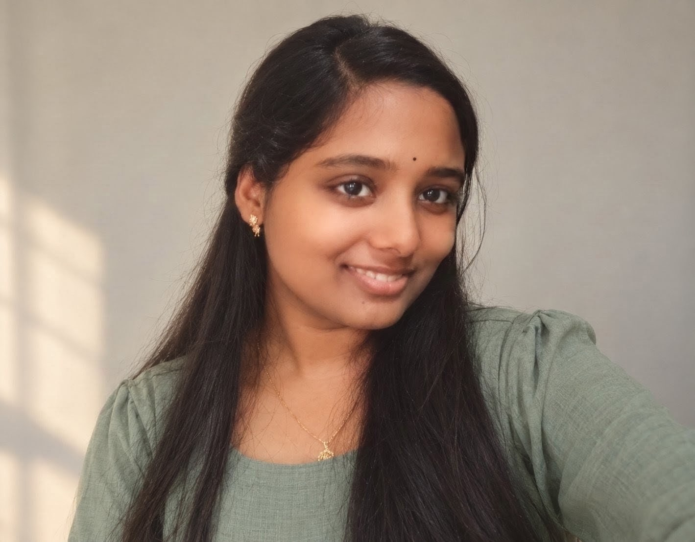

BACHELOR OF TECHNOLOGY
Computer Science and engineering
Lendi Institute of Engineering and Technology
3rd year · In progress
BTECH · COMPUTER SCIENCE AND ENGINEERING
Learning to build things that matter.
Third-year BTech student at Lendi Institute of Engineering and Technology, exploring software development, problem-solving, and the ideas that turn into useful products.

01 — A little introduction
I’m a Computer Science and Engineering student building my foundation one project, problem, and new idea at a time.
My interests currently sit at the intersection of problem-solving and web development. I enjoy understanding how things work, trying out ideas, and learning by making. I’m still exploring the areas of technology that excite me most—and that exploration is part of the journey.
This portfolio is a snapshot of where I am today: a learner in progress, with room to grow and plenty of curiosity to bring to what comes next.
What I’m working toward02 — The foundation
Building technical foundations through coursework, practice, and projects.
BACHELOR OF TECHNOLOGY
Lendi Institute of Engineering and Technology
03 — My toolkit
A growing toolkit. I’m developing confidence by putting fundamentals into practice.
Development tools and technologies for the LumiShelf project.
04 — Selected projects
A project is a chance to turn a question into something you can explore.
DIGITAL LIBRARY SYSTEM
A digital library system built with a web interface, a Node.js and Express server, and MongoDB.
PROJECT IDEA
A concept for exploring code tracing and program logic. This is an idea / prototype, not a completed or deployed project.
05 — Beyond the syntax
My interests are still taking shape. These are the threads I’m following right now.
Breaking a challenge into smaller questions and working toward a clear solution.
↗Exploring how thoughtful interfaces and useful functionality come together.
↗Trying new technologies and finding out what I’d like to learn more deeply.
↗06 — Looking ahead
I want to strengthen my programming skills, keep building practical projects, and discover where my interests can make a meaningful contribution. I’m open to feedback, new perspectives, and opportunities to learn.
07 — Say hello
I’m open to connecting with fellow learners, mentors, and collaborators.
Email me